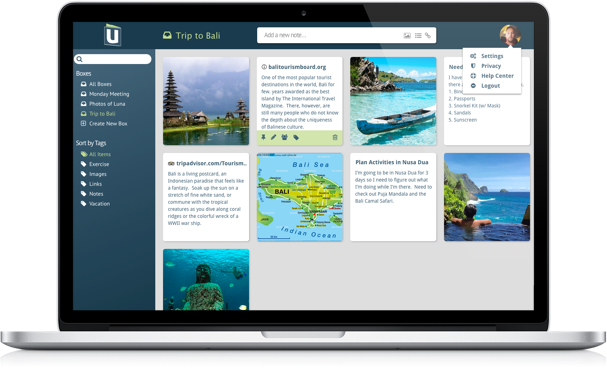
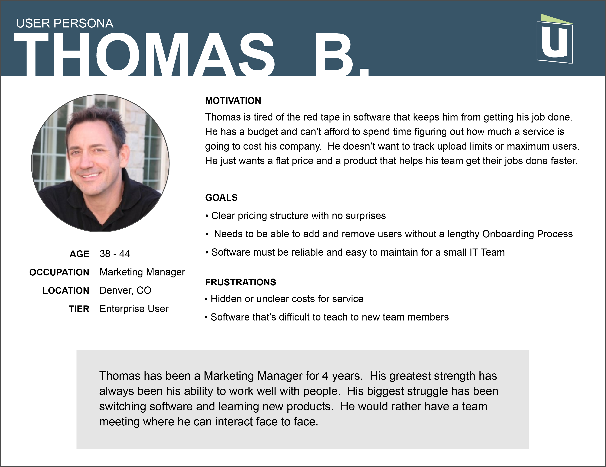
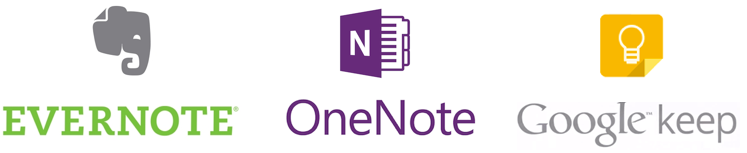
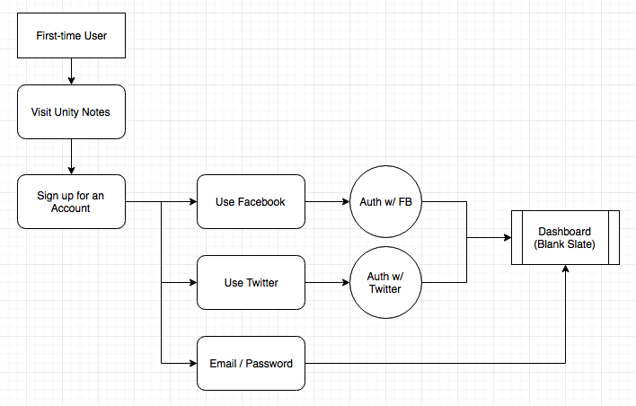
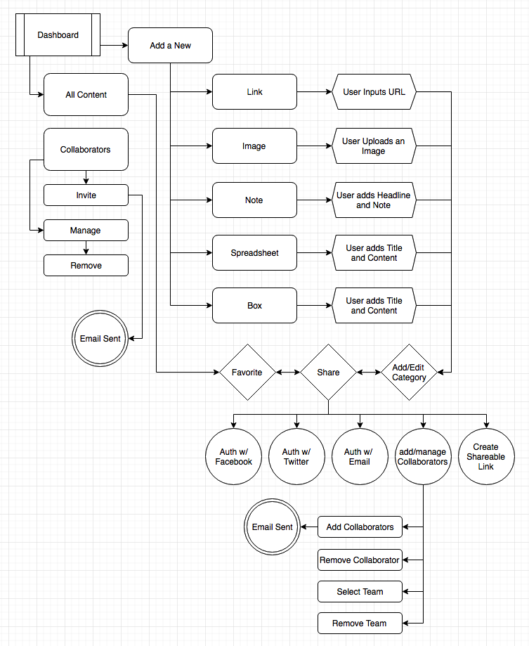
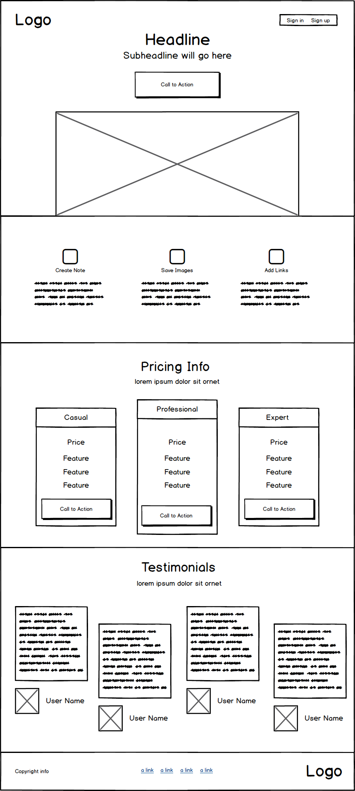
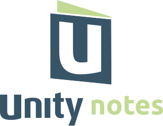
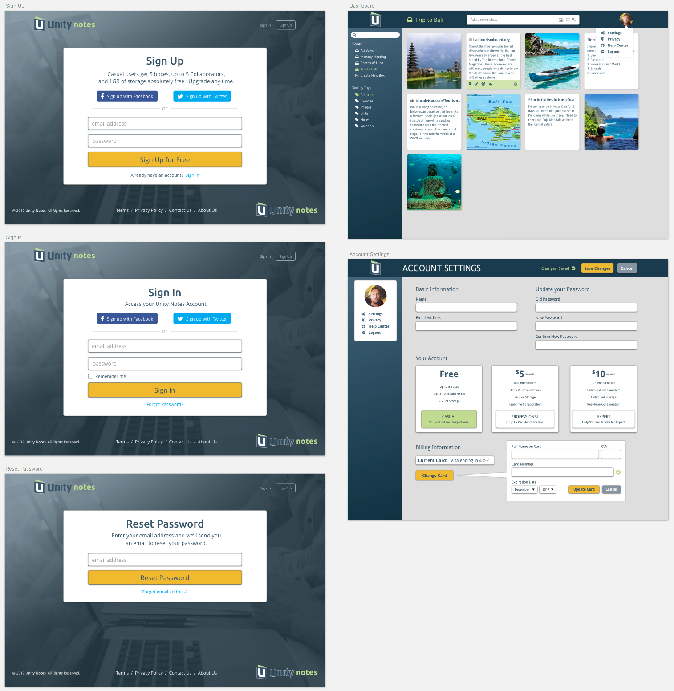

My role: Visual Design, UX/UI, Branding, Prototyping
Summary
Inspiration is everywhere but capturing and sharing your ideas with a team is cumbersome with existing software. Unity Notes is a brand new Web App that lets you collect and sort notes, documents, images and links all in one place. A clean interface built with usability in mind makes it easy to organize and share all of your content online; “ensuring great ideas are never lost”.
Problem
Simple Note taking apps like Google Keep are too basic and don’t allow you to collaborate with a team effectively. Feature-rich Note taking apps like Microsoft OneNote and Evernote have become too clunky and frustrating to use.
Solution
There is a demand for a new Note taking app. One that has been developed with simplicity and usability in mind. Using competitive analysis, user research and iterative design - Unity Notes was created intentionally from the ground up to allow individuals and teams to collect and share information online.
Research
"UX design is about creating solutions that respond to the needs and desires of your target consumers, in a way that is usable, pleasing, and memorable." ~ Harish Venkatesan
Online Surveys Google Forms, Facebook, Slack
Since this project was born of my own frustration (looking at you Google Keep) I had to make sure the problem wasn't just in my head. Creating an Online Survey is an easy way to find out whether other people were experiencing the same dissatisfaction I was. Facebook and Slack (Bloc Hacker Club, FreeCodeCamp) turned out to be great resources to target users within my desired demographic for free. I asked questions to understand how users interacted with their devices. Qualified them by finding out whether or not they worked in a collaborative environment. And learned who my primary competitors were.
Most importantly it gave respondents an opportunity to describe what they liked and disliked about the current tool(s) they use. An interesting correlation emerged- When their tool made it simple to save content they almost always mentioned it being difficult to sort and find the content they saved. This insight would prove to be a strong competitive advantage and a main focal point during the development of Unity Notes.
Survey Highlights
-
92 % Preferred using their Smartphone to browse online. Laptops came in second. Desktops third. (69.2% and 53.8% respectively).
-
69 % Often times saved the content they found online. "Ability to organize" was the most liked feature of the software they used.
-
84 % Worked in a collaborative setting. The majority of respondents (66%) were designers in the tech industry.
-
67 % Experienced difficulty sorting and finding what they had saved with the software they were currently using.
- The possible options for one question were: "never" "occasionally" or "often". Looking back I realized those answers are highly subjective. Adding context e.g. "Occasionally (1-5 times a week)" would have removed the subjectivity and given me more accurate information to work with.
- I didn't ask what features they wish their current product had. This would have been a great opportunity to discover important features that may have been overlooked. It could also be very valuable in determing what to prioritize for a Minimum Viable Product.
- I also realized afterwards that I had no way of contacting the respondents to clarify their responses or ask follow-up questions. Adding: "Please enter your email if it is ok to contact you with any further questions" would have allowed me to stay in touch with those willing to offer their opinion.
User Personas Skype, Illustrator
Most of my survey respondents were anonymous but thankfully a few were colleagues which allowed me to follow up and conduct in-person interviews. Surveys are great way to validate a hypothesis but interviews offer a depth of understanding and empathy that proved invaluable-
I was actually surprised by how much I was able to learn just by getting in front of my potential users and having a conversation. The interviews were also useful to inform the creation of User Personas. By understanding each unique workflow I was able to create three personas
to guide my development process and ensure the end user was always central throughout the decision-making process.
Example User Persona

- My interview style was mostly organic. Because I knew them personally I didn’t have to consider establishing rapport- I was able to ask any question that came to mind. As a result, the interviews went smoothly but the downside was that each interview varied significantly and I wasn’t able to develop a baseline between them for comparison.
- My User Personas weren't entirely fleshed out. I included insignificant information (e.g. their location) and didn’t spend enough time developing personas that would connect with (and help guide) a development team.
Throughout the development process you should be able to quickly determine how your persona would react to the overall experience.
Competitive Analysis Whiteboard, Sketch App
My Competitive Analysis was completed in two phases: The first phase was done prior to sending out the survey. I brainstormed all of the key terms which Unity Notes would appear under Google, Bing, and Yahoo search engines. (e.g. “note taking apps”, “best tools for team collaboration”). Reviewing and paring down those results gave me a list of options
to include in my questionnaire (making sure to include an option for respondents to include anything I may have missed). The results of the Survey helped me focus my research on Unity Notes three strongest competitors:

Once I identified the three strongest competitors, the second phase began: I conducted a SWOT Analysis to determine Unity Notes' competitive edge. I considered Evernote to be the strongest of the three reviewed as they most closely resemble what Unity Notes will offer (and they are an Established Brand with 100+ Million users). Fortunately they suffer from poor UI problems. Of the respondents who no longer use Evernote the primary issue was the site feeling "overwhelming and difficult to use". OneNote, although not as popular as Evernote (at least among my respondents), is still a strong competitor and created by Microsoft. Since Unity Notes is being developed as a web app it would have seen a competitive edge over Microsoft years ago when Office was offered as download-only and exclusive to Windows- But since Microsoft has transitioned the Office Suite into a Web Service with Office 365, Unity Notes must now rely on carving a niche and being more responsive to users demands to compete. Google Keep is free but lacks true collaborative features. Unity notes will utilize the same Masonry Layout As Google Keep but places more emphasis on co-authoring content vs simply collecting content.
- This competitive Analysis focused more on Surface Level details about each company, rather than focusing on Unity Notes’ competitive advantage (user experience). If I had spent more time reviewing the features of each competitor along with their limitations (Which were expressed in the Surveys and Interviews) I could have provided more clear and actionable goals for the development of Unity Notes.
Structure
"If a picture is worth 1000 words, a prototype is worth 1000 meetings". ~ Tom & David Kelley
User Stories Index Cards, Google Sheets
Writing good User Stories can be deceptively challenging, especially in an agile environment. If you don’t correctly evaluate your user’s needs you can end up wasting valuable time and resources developing features that simply won’t get used (while delaying other features that would). For me, user involvement was the most critical factor for determining which features should take priority. After writing down every User Story I could think of onto index cards (for both new and returning users) I sat down with 2 potential users and had them sort the cards in order from ‘Develop First’ to ‘Develop Last’. I encouraged them to discuss and decide the order of cards together which helped me get a better sense of their Thought Process.
After they were done sorting I pointed to one card toward the end of the list and asked them “If you signed up and realized it didn’t have this feature yet.. would you still use Unity Notes?” I continued toward each card moving towards the beginning of the list until they could agree “NO”. Prioritizing features would come in handy developing a Minimum Viable Product.
- Having the Users work collaboratively may not have been the right choice. Each had a different threshold for what they would be willing to do without, in the end they compromised well but it did cause some tension between them and if I had needed them to cooperate on anything further it may have been met with resistance. Instead I would want to conduct that test individually and with a larger sample size.
- For the sake of time I didn’t include the benefit of my User Stories. “As a [Persona] I want to [do something] so that I can [realize a reward]”. I think it is important to always remember WHY we’re developing a feature (and have a clear test to prove it’s complete). I will make sure to incorporate that in future projects.
User Flows Draw.io, Google Sheets
My favorite activity in the Structure phase of my design process is hands-down creating User Flows. Maybe that’s just because I discovered Draw.io? (Probably helped that I was designing for a brand new SaaS Application as opposed to an establish one with 100+ Million Users and 3x the features too.. but still). Creating User Flows after I prioritized the User Stories was a great way to start invisioning how users would navigate the site. The User Flows also turned out to be an easy reference when designing the Low-Fidelity Wireframes.
'New Signup' User Flow

'Manage Collaborators' User Flow

Low-Fidelity Wireframes Balsamiq, inVision, Peek
With both the User Stories and User Flows completed (and our MVP priorities identified) it was time to build and test a Low-Fidelity Prototype. The first step was referencing the User Flows to construct a Sitemap. Thanks to Balsamiq creating it only took a few minutes. Next came the Homepage. I created a few variations and returned to the same Facebook groups I used to conduct my initial survey to get feedback.
Winningest Homepage Variation

With the homepage layout determined I shifted my attention toward usability for the rest of the site. I wireframed the Accounts page and User Dashboard, then uploaded them to inVision, creating two clickable prototypes. The goal was to get these prototypes into the hands of users to test how intuitive and clear the layouts were before investing resources on a High-Fidelity Mockup. The first round of testing took place on Peek, where users were asked to complete a specific set of tasks. A usability script was then developed to do in-person interviews. I brought my laptop with me to Ziggi’s coffee shop in Longmont and enticed a few guinea pigs volunteers to complete click-thru tests with the promise of me buying them blueberry scones afterwards.
- Posting four variations of the homepage online for feedback was more effort than it was worth. It may have been fine had I put all four together in the same (numbered) image and asked respondents which they preferred. But I didn’t. Instead I put them into a single elimination bracket. So it was ‘1 vs 2’ and ‘3 vs 4’. The winners (versions 1 and 3) went head-to-head in a final showdown. By the time it got to that point everyone was over it and I received far fewer responses.
- If I’m going to be paying for scones I really need to have more tests prepared. It literally took less than 6 minutes for everyone to complete the click-thru tests and if they hadn't politely declined the Scones I offered to buy them I would have been out $12. It was a fun experience but I can’t say it would have been worth it for what little I had prepared.
“You don’t think your way to creative work. You work your way to creative thinking.” ~ George Nelson
Branding Sketch App, Illustrator, Usabilityhub
Since I was developing Unity Notes from the ground up I had complete freedom to brand the company however I saw fit - which was both liberating and daunting, all at the same time. There are many factors to consider when establishing a strong Brand Strategy, which was completely disregarded so I could jump straight into logo design. After about 40 minutes the first logo concept was done:
First Logo Design
I loved how the line joining the "U" and "N" mirrored the line of the more playful looking "Y". A decent first draft, but the design looked too militant for an app that was meant to evoke inspiration and collaboration. I thought the color was a little too bold as well so I adjusted the tint until I came across a purple that I felt embodied a more playful tone. It helped, but not enough- so it was back to the drawing board:
Second Logo Design
I kept the playful vibe in mind while working on the second design. The purple I chose for this iteration is a little painful to look at now but back when I was designing it I thought it was the bee’s knees. I knew I was moving in the right direction but the second design wasted too much vertical space and the name “Unity” I came up with was too ambiguous. I wanted something that was both simple and memorable:
Final Logo Design

I took a more refined approach with the final design. By simplifying the logo I was able to design for mobile and web simultaneously. The colors were adjusted and validated with an online preference test with Usabilityhub. The primary color was changed to navy blue because from a Color Psychology perspective, blue conveys trust and responsibility. I kept the green accent color from my original Style Palette but softened it to take on the playfulness I tried capturing with purple from the second iteration.
- It wasn't until I began applying the colors to the High-Fidelity Mockup that I realized how cartoonish the purple/green color scheme actually looked. An unfortunate discovery after having already devoted time to create the Style Palette. My color intuition will improve with time but it would be nice to have at least one Medium-Fidelity Page mocked by time I design the logo. Nothing beats a visual reference to help you see how your color choices work holistically.
- The other consideration I nearly overlooked during Logo creation was the ability for the brand to have consistency between web and mobile apps. It was a very valuable a-ha! moment for me that will not only save time in development but also strengthen brand clarity.
- Looking back, I wish I would have saved Logo Design for last. I think it is more imporant for the brand to be clear and consistent about "who they are". Had I developed a Mission Statement first it would have been clear the purple/green wasn't a good fit for the brand's image.
High-Fidelity Mockups Sketch App, inVision, Usabilityhub
Once satisfied with the site’s architecture and user flow it was time to apply the Style Palette and bring Unity Notes to life. I used Sketch App for the High-Fidelity Mockup because it has a fantastic system for creating an Interface Library. Sketch allows you to turn elements like buttons, paragraphs, headings and forms into symbols that you can reuse throughout your design. It doesn’t sound like a big deal until you realize that whenever you make a change to a symbol Sketch automatically updates every instance of that symbol. Mind. Blown. This makes it a lot easier to make micro-adjustments to your content on the fly without significantly slowing down your development process.
Various High-Fidelity Mockups

- It’s all highly situational, but given how fast I was able to build my High-Fidelity Mockups with Sketch it really makes me question whether working with Low-Fidelity Wireframes in this project was worth it. I understand that the lower the fidelity, the easier it is for clients to analyze the site structure but users are also used to interacting with live sites. I received one video response on UserTesting where the user got confused and frustrated with the Low-Fidelity Wireframe because everything was monochrome, which made it difficult to distinguish what was selectable and what was just a placeholder.
Development
"Get in over your head and often and joyfully as possible." ~ Alexander Isley
I love that quote and it fits my life (and this project) so well. Although I’ve been designing websites for many years- it was always using WYSIWYG editors. The company I worked for already had their design system established when I joined and they were more focused on having fast turn-around times so coding by hand was unnecessary. This project was my first foray into CSS, JavaScript and jQuery. It was also the first time using Git and Github for version control. Learning two coding languages simultaneously was frustrating at times but was made easier by having countless resources online (which I was extremely thankful for). Unity Notes marks the beginning of a long and exciting journey for me into Web Development and User Experience Design. A journey I'm glad I didn't put off any longer.
Aside from weekly meetings with my mentor to discuss progress and get feedback, Unity Notes was a solo project- My biggest asset was time. If the project had been a collaborative effort (or requested by a client) my design process most likely would have looked completely different (The previous projects I have been a part of had budgets that were too tight to do any sizable amount of research or analysis of user behavior). I am grateful for the time I had because it allowed me to experiment with new techniques and follow an ideal process thoroughly. As an up-and-coming UX Designer, understanding every tool at my disposal allows me to be more adaptable and skilled at determining the best tool for each situation. However, I look forward to working on more realistic projects. Ones that will also test my decision-making and communication skills.
My interest in design began in 8th grade when I discovered MS Paint could pass as a makeshift CAD program to make cleaner woodworking plans. Throughout my 20's I worked as an independent contractor for a small design company in Iowa. Providing customer service to existing clients and eventually transitioning those sweet MS Paint skills into Photoshop and Illustrator to create High-fidelity mockups for new clients.
I enrolled in Bloc's Full-Time Designer Track program in March of 2017, quitting my job of four years to focus all of my attention on becoming a User Experience Designer. It has been five months since I've started the program and I've learned enough to be dangerous. I have a greater appreciation of the design process and the benefits of conducting thorough user research. What I need now is to find my people and get some real-world experience. My goal is to find a local design firm who sees my potential and is willing to support me in becoming one of the best UX Designers this world has ever seen.
In the meantime I will continue to learn all that I can through books, webinars, and meetups. Becoming a skilled UX Designer is definitely an arduous process at times. I truly enjoy learning all I can about human behavior and how that translates into designing functional and memorable experiences for users.